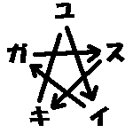

〇
それは五月のよく晴れた日のことだったと思う。
ぼくは緑の芝草が生え茂る草原に寝ころんでいた。
空は青く澄んでいて、アイスクリームみたいな白い雲がぽっかりと浮かんでいた。あれを食べたら美味しいかもしれないなどと思いながらすこしまどろむ。
草原の草花は初夏の光を楽しんでいる。その草花の間を通ってきた風が、こしょこしょと鼻をくすぐる。花の蜜の匂いがして気持ちが良かったから、花粉まみれになりながら花に頭をつっこむミツバチの気持ちが、すこしだけわかるような気がした。
花の香りとは違う、ふわりとした甘い香り。
左肩を触られたような気がしたので、そちらに顔を向けると、そこにユウがいた。ユウは真っ白なワンピースに包まれていて、ぼくの肩にしがみつくようにして眠っていた。ユウの腰の所に結わえられている布のひもが、ユウの身体に止まっている白いチョウチョみたいだった。
物心ついたときから、ぼくの隣にはユウがいた。幼なじみというのだと思う。そうなのだからだろうか、ともかくユウがぼくの隣で寝ていることは、ミツバチがレンゲの花の上にいるのと同じくらい自然なことなのだと思っていた。だから、ユウに対して何か特別の気持ちを持ったりとか持たなかったりとかいうことは、なかったし、これからもないと思っていた。
風が吹いて、ユウの身体に止まっている白い布のチョウチョが揺れた。ツーテイルにしてあるユウの髪の毛の片一方も、すこし揺れた。
「ツーテールっていいね」
「ん」
一瞬ユウの唇が動いて、そしてまた元に戻った。ユウの頬はレンゲの花みたいに、ほんのりと赤く上気していた。
とくり、と心臓が波打つ。
いつの間に、ユウはこんなに大きくなったんだろう。いつの間に、ユウはこんなに可愛くなったんだろう。
隣にいるユウのほっぺたに人差し指を伸ばして触ろうとして、やっぱり、止めた。
今までだったら、ユウに触ることは自分に触ることみたいに簡単なことだった。でも、今はユウに触ってしまうと、壊れてしまいそうで触ることができない。本当はユウを抱きしめてしまいたいのだけれど、そうしたら、今の幸せそうなユウの寝顔が消えてしまいそうなので抱きしめることもできない。
だから、ソフトクリームの雲をもう一度、見上げた。
とくり、と心臓の音が聞こえる。それはぼくの心臓の音ではなくて、隣にいるユウの心臓の音だった。
「ねえ」
隣から、小さな声が聞こえた。
「あの雲、ソフトクリームみたい」
「うん」
そう答えた。
流れていく、雲。
溶けていく、ソフトクリーム。
「ユイ……好き」
「うん、大好き」
空のソフトクリームが、少しずつ流れていって、やがて、消えた。
ソフトクリームは大好きだったから、少し残念だった。
左肩に感じているユウの身体が熱かったから、その温度で空のアイスクリームが溶けてしまったとかそんなことはまったく考えないで、また目を閉じた。
淡い五月の記憶。
手を伸ばせば、触れることができるくらい近くにあるような気がする。それでもその記憶が手に届かないところにあるということは、その記憶を描写する言葉がその時にしては妙に大人びた感じになっていたからわかる。半分夢だと気づいていて、半分夢じゃないと思っていた微妙な感覚から、多分今は現実なのだろうという気持ちに少しずつ帰ってくる。
意識は半分起きていて、視線は二段ベッドの二段目の床下を見ていた。
どうして二段ベッドの一段目にいるのかが一瞬わからなかったり。
それから、昨日、一四四光年先の恒星系から家にやって来た王子様のことを思い出す。
「ああ、そうか。だからか」
だから、隣に女の子が寝ているのか。
すうすうという寝息が隣から聞こえる。まるで夢の続きみたいにメイがぼくの左肩にしがみつくようにして眠り込んでいる。メイは昨日着ていた桃色のネグリジェのままで、同じ布団の中にいた。
ベッドは窓に接している。カーテンの隙間から入ってくる白銀色をした月の光が、メイの頬を照らし出している。淡い無彩色の光が二段ベッドの一段目にしみ込んできている。
メイの唇が小さく動いた。
メイの唇から息が漏れた。
空気が動いてまたあの甘い匂いがした。
鼻がむずがゆくて「くしゅん」と小さくくしゃみをした。
枕元の時計を見るとまだ朝の三時だった。もう少し寝ようと思う。しどけなく寝ているメイに目をやって「おやすみなさい」と声を掛けようとする。
「ちょっとまて、ぼく」
なんでメイが二段ベッドの一段目にいるんだろう。しかも同じ布団の中でしがみつかれているし。というかメイは自分で二段目がいいと言っていたはずだ。そう考えると今メイが一段目にいるのはおかしい。ここはどう考えても二段ベッドの一段目だ。
「しょうがない。ぼくが、二段目に行けばいいや」
なんだか論点がずれているかもしれないけれど、半分夢の中だから許されるだろうと思いながら、そっと、身体を起こそうとする。
「……」
メイにしっかりと左肩を抱きしめられていた。しかもメイの身体は柔らかくて気持ちよかった。反則だった。反則でもそれを振り切って二段ベッドの二段目に行かなくては、貞操の危機だと思ったのでメイの手を左肩から外そうとした。
メイの手に触れる。
メイの眉がぴくりと動いた。
「母上……」
一瞬ためらってから、メイの手を振りほどって身体を起こした。
「行か、ないで」
軽く閉じられたメイの瞼。その隙間から少しずつ浸みだしてくる水滴が、メイの目の縁で貯まって、そしてこぼれ落ちた。月の光でメイの涙が淡く光った。布団から出てメイの身体に布団をかけ直す。メイはもう布団の中にないだれかの身体を探すように、空っぽの布団を抱きしめて、そしてそこに顔を埋めた。
それを見届けて、少しだけ罪悪感みたいなものを感じつつも、はしご段に足をかけて二段ベッドの二段目に上がる。
二段ベッドの二段目にすとんと腰を落とす。二段目の布団はまだ少しふくらんでいた。
顔を天窓の方に上げる。
二段目からは天窓に手が届く。天窓のカーテンは開いていた。
窓の隙間から満月が見えた。満月の周りに星が見えた。明るい星だから一等星だろうと思った。メイの恒星系はどれなんだろうと思う。メイの星はどんな星なんだろうと思う。でも一四四光年は遠すぎて、まったく想像がつかなかった。
一人きりで遠く離れた星にやってくるだけの勇気を持った王子様だけれど、母親が恋しいところを見ると、まだ幼さも残している。
メイは本当は何歳なんだろう。
ふとそんなことを思った。
そのまま朝まで起きていた。
一
人の気持ちはわからないということは、ぼくが生まれる前からの自明な公理のような気がするのだけれど、なにごとも体験してみないとわかった気分になれない。その日もそんな感じだったのだと思う。
始まりは朝の通学からだった。
五月の連休明け第二日の空は、梅雨の前の快晴を謳歌するかのように真っ青だった。いつもならば自転車通学許可標が張られた自転車に乗っかって、ちゃりちゃりと通学する所なのだけれど、今日はメイを間違いなく中学校に連れて行くという大役を仰せつかっているのでその自転車は荷車と化している。
荷車を引く従者と王子様、なんていう構図は昔読んだ物語には一度も出てこなかったと思うことしばし。さらに言えば、その王子様は一四四光年遠くのテスマート星系第五惑星レヴァから来た第五王子様で、今は地球人の少女の格好をしているのだから、話はもっと複雑になる。
荷車と化した自転車を引く従者と、少女の格好をした一四四光年離れた恒星系から来た王子様の図というものは、やはり昔話風じゃない。
その王子様ことメイは、青葉並木の隙間からちらちらと差してくる太陽の光に手をかざしながら、こちらをくるりと振り向いて笑った。メイの肩まで掛かる金髪がまぶしいのは、太陽の光のせいだろう、たぶん。
「やはり人工太陽でない本当の太陽の光は、スペクトルが広くて気持ちがいいな」
後ろ向きに歩きながらこっちを向いているメイは、中学校指定の紺色をしたセーラ服に小さな身体を包まれている。メイの金髪がケヤキ並木を通り抜ける五月の風で、ささらとそよぐ。それをメイの左手が押さえるのだった。
「この季節が、一番気持ちがいいはずだと思う」
なんの気なしにメイに答える。
実際、五月という季節は若葉が萌える季節だけあって気持ちがいい。フィトンチッドの効用なのかどうかはわからないけれど、吸い込む空気が清涼なのだ。
並木に止まっている雀が、ちゅんちゅんと鳴いている。
雀の声を聞きながらメイと一緒に並木道を学校に向かって進む。並木の密度が段々と濃くなっていって、いつの間にか雑木林の間を歩くようになり、道は段々と上り坂になっていく。この道は稲荷神社の南側に沿って西に上がる急な坂なのだった。神社を通り過ぎてさらに坂を上っていく。だんだんと建築物がまばらになって、木々の密度が深くなっていく。
ウグイスの声がどこからか聞こえてくる。
こうなると並木道というよりかは林道といった感じ。ぼくが通っている大森中学校は青葉の生い茂る青葉山のてっぺんに位置していて、勉学に励むには最適なのだった。逆に言えば周囲には現代文明の象徴であるコンビニすらもないし、携帯電話の電波も基地局まで届かないという陸の孤島でもあったりする。
山道を進む王子様と従者。これならおとぎ話で通用するかもしれない。
ふいにメイが立ち止まった。
メイの視線は道の脇に無造作に置かれている段ボール箱に向かっていた。その中に黒い子猫がいた。捨て猫だった。メイはすっとその段ボール箱に向かって進んでしゃがみ込み、中の子猫を抱き上げた。
メイは立ち上がって、ぼくの方を向いた。
「この子を連れて行く。見殺しにできないのだ。いいか？」
一瞬、風気委員とか先生とかの顔がちらりと頭をかすめる。
「でも……」
メイの胸に抱かれている、やわらかそうな子猫を見る。
子猫がぼくを見上げて、みゅうと鳴いた。
それを見て、こくりと首を縦に振ることしかできなかった。
「よし。決まりだな」
メイは嬉しそうに笑った。
メイが子猫を抱いているので、必然的にぼくが段ボール箱の担当になる。
とりあえず自転車はスタンドを立てて止めて、段ボール箱の中身を確認する。段ボール箱の中には毛布と、ミルクらしきものが入っていた小皿、そして封筒があった。封筒は薄い桃色をしていて、星のマークのシールで封が閉じられていた。宛名も差出人も書いてない。たぶん子猫を捨てた人が置いていったんだろうと判断する。
封筒をポケットに入れて、段ボール箱は自転車の荷台にくくりつける。
「まったく、ひどいものだな。こんなに、なめ、いやなでてやりたいほど可愛い子を捨てるなどありえないことではないか」
メイは怒った感じでそう言った。
「街には、街なりの住宅事情があるんだよ。一匹くらいだったら飼える家でも、それが四匹とかいっぺんに生まれると、もうだめだということになって、それで……」
メイはきっとした口調で言った。
「それが子猫を捨てていい理由になるのか？ 私なら、そんなことはしない。親猫の気持ちになってみれば、子猫を奪い去られるなど……」
そこでメイはぐっと言葉を詰まらせた。
確かに、それは人の勝手だ。
「ぼくも、ぼくもそんなことは、しないよ」
そう言ったら、メイは抱き上げていた猫に頬を当てて、小さく笑った。
「よかったな。これからは、ユイの家がおまえの家だぞ」
子猫がみゅうと鳴いた。
「えっ、て、ぼくがこの猫を引き取ることになるの？」
メイはこくこくと頷いた。
「もう一人、居候が増えるだけだからいいだろう」
「もう一人って、もう一匹だよ」
「別にどっちでもいいだろう。ともかくよろしく頼む。だめか？」
メイは子猫にほおずりをしたままでこちらを見上げてきた。掛け値なしにおねだりポーズだった。メイに子猫が似合っていて、青葉に反射する光くらいにまぶしかった。
「いいよ」
まぶしさに屈服して、がくりと両手を地面につく。
こうなったら頷くしかない。かくして我が家の居候は一人と一匹に増加したのだった。
「ふう」
気を取り直して立ち上がる。
そう言えば、誰がこの子猫を捨てたのだろう。
確かにそれは大きな問題だ。
それに、どうしてこんな大森中学生しか通らない山道まで捨てに来たのだろう。街の方が人通りが明らかに多い。ひょっとしたら、こうやって中学校の生徒が拾うことを期待したのかもしれない。でもそうだったら、ちゃんと学校に許可をとって、張り紙とかをしてもらい手を探せばすむはずだ。
手がかりはポケットに入れた封筒にある。封をした封筒を開けるのは気が引けたけれど、封を開けて中身を見る。
薄桃色の封筒の中身は、うす緑色の便せんだった。
ユスイキガ ☆
便せんに書いてあることは、それ以上でもそれ以下でもなかった。
二
授業の前のホームルームの時間において、メイは少なからず時の人になったのだと思う。もともと転校生が少ない地方の中学校なのだから、メイがやってくるということは学校新聞の一面を飾るくらいの事件だった。そして物珍しさも手伝って、クラスが熱くなるのは当然だった。
その中でも、幼なじみのユウは、いつもと変わらずに机に座って理科年表に目を通している。そういえばこの前は物理学事典に目を落としていた。
右二つ前二つの右斜め前にユウはいる。ツーテールの髪の毛が、時折ゆらゆらと揺れるところを見ると、納得できるところで頷いているらしい。ホームルームの時間に理科年表に目を落として頷いている少女の図というのは、見慣れていないと特殊な感じがするかもしれないと思わなくもない。でも見慣れてしまえばなんてことはない。
ユウは天文部なのだ。そして星を見る会の会員でもある。さらに言えば星座占いも好きだった。そんなユウは、噂の転校生が自己紹介するということになってやっと顔を前に向けたのだった。
金髪でエメラルドグリーンの瞳をした少女がそこに立っていた。そして両手でしっかりと黒い子猫を抱えている。子猫が、みゅうと鳴いた。
さすがに幼なじみのユウも、ひゅうっと息を飲んだようだった。
メイはぺこっとお辞儀をした。
「名はメイ、生まれはレヴァ……」
おい。
それは秘密じゃなかったっけ。
案の定、そこでメイの言葉が詰まった。メイの目が、困った感じでこっちを向く。
ふるふると首を振る。
メイは、頭に手を当ててちょっと悩んだ後に、言葉をつなげた。
「あー、生まれはレバノンだ。実は、英国から来ていた外交官が地元の女性と、熱烈な恋愛をして生まれたのが私だ。私が生まれた後、母とともに英国に渡ってそこで育った。今回は留学ということで、このクラスにいる某ユイの家に一年間ホームステイさせてもらうことになっている」
最初のメイのでたらめはどうでもいいとして、後半の言葉に反応したクラス中の視線が痛い。さらに言えば幼なじみのユウにはしっかりとにらまれている。
某ユイって、ぜんぜん某になっていない。
そんなことをぼくが思っていることは一四四光年向こうのレヴァに放っておいて、メイはにこっと笑って、スカートの裾をちらっとつかんで、お辞儀をした。
「よろしく頼む」
なにやら物が崩れる音があちこちからする。たぶん、ぼくを除いたクラスの男子全員がしっかりと頼まれてしまったに違いない。というか女子も頼まれているし。
「あー、とりあえずメイさんは、ユイ君の隣が開いているからそこに座りなさい」
担任の森先生がメイの座る位置を指示した。
メイがつかつかとぼくの隣にやってくる。
嘘つきは泥棒の始まりだ。
「嘘は良くないよ」
とメイにささやく。
みゅう、とメイの手の中で子猫が鳴いた。
メイはしれっと答えた。
「まあ、おおむね状況の説明はあっているではないか。留学を亡命と置き換えれば、それなりに意味は通じる」
通じないと思うのは気のせいではないと思う。
「それに、日英同盟というものがあるそうではないか。つまり英国はおとなりさんのようなものだろう。たかが五厘光秒の距離ではないか。だからまったく不自然ではない」
「日英同盟はね、一九二一年に無効、になってるんだよ」
中学生必須の年号をメイに教える。ちなみに日英同盟は中国・朝鮮をめぐって利害が一致した日本とイギリスが結んだ同盟のことで、確か一九〇二年のことだったと思う。これが日露戦争の背景にあったということは歴史の教科書に載っている話だった。
そんな歴史的会話をしていると、担任の森先生が突然事務的な話をし始めた。
「転校生が来たので席替えをする。これは公理だ」
唐突だった。
「不公平が無いように乱数を使う。通常の計算機によって生成される疑似乱数ではビット数の制限に起因する原因で周期が有限の値となってしまう。たとえば安易な線形合同法においてはその周期性は顕著に表れる。そこで今回私は、実空間上の構造物に由来する不均一性を利用して、周期性を極限まで少なくした乱数発生法を用いて、席替えをしようと思う」
さすが数学科の先生だけあって、席替えの方法も複雑な方法を使うみたいだった。
「これが、その乱数発生器だ」
先生はおもむろに、八角柱がくるくると回ってボールを出す機械を取り出した。町内会の福引きで使うガラガラによく似た機械だった。
取りあえず手を挙げて質問。
「先生、それは福引きに使う機械に似ているようですが？」
「うむ『福引きマシン』と言う。世間一般にあるのは『福引きマシーン』だ。だがこれは本物の『福引きマシン』だ。『マシン』を『マシーン』と伸ばさないところが本式だ」
先生の眼鏡が、きらーんと光る。
そんなマニアックな区別など誰も知るわけがない。
つんつんと、隣にいるメイに脇を突かれる。
「なんだ。あの奇怪な機械は？ 食べられるのか？」
「安心していいよ。別にあの機械が生徒を取って喰うとかいう話を聞いたことがないから」
「そうか、食べられないのか」
メイはうんうんと納得したようで。ぱちっとポケットから手帳を取り出して、なにやらメモっている。
「あれ、なにそれ？」
「うむ。せっかくだから、地球の文化を学ぼうと思ってな。気づいたことは書き込んでおくのだ」
このままでは地球の文化が疑われてしまうので、正しく説明するのは地球人の義務だと判断する。
「あのね、あくまでも、この風習は地球の特殊な地域においてのみ行われる風習なんだよ。だから、誤解しないでね」
メイは「おおそうか」といって、手帳のメモに「特殊事例」と丸文字で付け加えた。
そうこうしているうちにメイの番がやってくる。
「じゃあ、やってくる」
と言ってメイは福引きマシーン、訂正、福引きマシンに駆け寄って、嬉しそうにガラガラと回した。
「一等、最前列！」
なぜそこで先生が叫ぶのかが疑問だった。
メイが一等の札を持って再び帰ってくる。
「おい、一等の札には何かいいことがあるのか？ 食べられるのか？」
「多分、地球人の社会中にあるものの大半は食べられないものだと思う」
メイはかくっと首を傾げて、はてなといった感じだった。
「よくわからないが、取りあえず記述しておこう」
そう言って再びメイは手帳にそのことを書き留めた。
全員が福引きマシンを回し終えて、席の引っ越しが始まる。ちなみにぼくは前と変わらず南の窓ぎわ最後列を奇跡的にキープした。といっても確率としては三十六分の一だから、まああり得ないことではないだろうと思う。
メイは一等賞で教卓の前の最前列に座っている。これも確率的には三十六分の一だけれど、ぼくがこの場所にいることも考慮するとだいたい十分の一パーセントくらいになる。そう考えると結構、珍しいことかもしない。
なんだかクラスの男子の視線が、教卓の前に座ったメイに集中しているような気がするのは気のせいではないと思う。やっぱり表向き留学生のメイは珍しいのかもしれない。
それはそうとして、席の分散具合は、男子と女子がちょうど乱雑に混ざる感じになっている。さすが福引きマシン、並の福引きマシーンとは違う。
あとは視力の関係で一、二人の入れ替わりが毎度ある。
ぼくの目の前の男子が手を挙げて発言する。
「せんせーい、黒板が見えません」
「うむ、それはたいへんだ。黒板が見えないんじゃあ、黒板に書かれた文字も見えないな。前に来なさい」
ぼくの右隣の男子が手を挙げる。
「先生、僕は、黒板は見えて、黒板の文字も見えますけど、黒板の文字が読めません」
「なに、そんなに私の字が汚いのか。それじゃあ前と替えよう」
ぼくの右方向四番目前方向一番目の右斜め前の男子が手を挙げる。
「せんせー、我々選手一同は……失礼しました。俺は黒板も黒板の文字も見えますけど、漢字が難しくて読めません」
「なに、そんなに成績が悪いのか。それじゃあ前と替えよう」
いつもはこんなことはないのだけれど、前に行きたがる男子が続出する。ちなにみぼくは視力が二・〇あるので、教室の一番後ろからでもチョークの粉がよく見えるから替えてもらう必要はない。
先生は困った表情で頭を掻く。
「うむ、困ったな。こんなに多いのは初めてだ。とりあえず替わって欲しい人は席を立って前に来るように」
がたがたと何人もの男子生徒が前に出て行く。
心なしかぼくの周りが寂しくなったような。
「誰か替わってくれる人はいないかな」
最前列窓ぎわに座っていた幼なじみのユウが、おもむろに右手を挙げた。
「わたし、後ろがいいです」
ユウがとことことぼくの前の席に歩いてくる。
なんだかやっぱり今日のユウの視線は、ぼくに対してだけ厳しい。
ユウは何にも言わないで、ぼくの前の席に座った。
「えーと、他は？」
教壇の真ん前にいるメイが手を挙げた。
「私は、後ろで大丈夫だ」
そう言ってメイはがたっと立ち上がると、教室の窓際一番後ろに座っているボクの隣につかつかと歩いてきて、がたっと座った。
なにやら前に出て行った男子生徒ががたっと崩れた。ぼくの視力はいいから狼狽している様子がここからでもよくわかる。
なんなんだ一体。
「先生、よく考えたら、黒板は大きすぎて見えないだけでした。やっぱり後ろの方がいいです」
「先生、よく考えたら、黒板に何も書いてありませんでした。やっぱり後ろの方がいいです」
などと男子生徒は言い訳をして元いた席に帰っていった。
隣のメイが、ふんふんと頷く。
「面白い風習だな。これが席替えというものか。なるほど、してあの前に出て行ってまた元に戻るという行動は、どのような文化的背景を持っているのかな？ なにやらあの男子生徒の言葉も論理的には意味がないようなのだが」
メイはボールペンを片手に、こっちを見上げてくる。
なんだか頭が痛くなってきた。
「うん、だから、これはね」
「ふむ。『特殊事例』か」
ぼくはこくこくと頷くことしかできなかったのだった。
三
メイは職員室で『捨て子猫特別持ち込み許可証』なるものを申請し交付されていたらしい。どうりで風紀委員がメイが抱いている子猫に文句を言わなかったわけだ。さすがにメイはそういう手続きが早い。それについてメイは「崩せそうにない問題はトップダウン方式で崩すのがよい」とだけ言っていた。
それはさておき、ホームルームが終わった後で、ぼくとメイは少なからずクラスの人から質問攻めにあった。
「おい、ユイとメイの関係は何なんだよ」
長髪での夢見るギタリスト少年、茶髪でピアスは校則違反のユキオ君。
そんな挑発系の質問にもメイはしれっと答える。
「ユイの家にお世話になっている。ちなみに同じ部屋に泊まっている」
「え？ って同じベッドで寝たりなんかしてないよね。まさかね〜。なんちって」
ノンちゃん。何でも疑問に思ったことは質問する。ショートカットで陸上部所属の体育会系女子。
「同じベッドで寝た」
そしてメイは正直だから何でも答えてしまうのだった。
「うああ、ありえないっ！」
頭を抱えたのは、丸めがねが似合う理系の少年、キイ君。左手にはコンパクト百科事典。
で、嘘じゃないから否定できない。
でも二段ベッドだし。
「あのね、同じベッドって言っても、上と下だから、変じゃないよ」
えっ？ みんなの視線が怖い。
「あのお、ひょっとして、ぼく、変なこと言ったのかな？」
「てめえ」
「女の敵」
「うああ、ありえない！」
「どうした？ 食べられるのか？」
メイはきょとんとしている。
そしてクラスの人の視線は完全にぼくに集まっていた。というか、クラスの人の目が怖かった。
「あの、変じゃないんだよ。途中で上下が入れ替わったりはしたけど」
あ、なんだか泥沼にはまっていく。
「あ、あのね……」
ぱちん、と乾いた音がして、一瞬、目の前が真っ赤になって、そして気づいたら、目の前に幼なじみのユウがいた。ユウの顔は真っ赤になっていた。
ユウにほっぺたをひっぱたかれた。
痛かった。痛くて涙が出そうになった。
でも、最初に涙を流したのはユウだった。
「もう、知らないから！」
そしてユウは教室から教室から駆け出て行ってしまった。
がたり、と椅子から立ち上がる。
「ユイ、今のは、どういう文化的背景があって……」
メイの声がなんだか遠くに聞こえる。
下から見上げる様にして、真っ直ぐな視線をぶつけてくるメイ。どうして、こんなにも、素直に生きられるんだろう。いやむしろ地球人というか、ぼくが色々と考え過ぎなのかもしれない。
「ごめん、メイ、今、すぐには、答えられない」
ぱっと、ユウの後を追いかけるようにして教室を出る。
ユウの行く場所はわかっている。
『廊下は走らず右側を』という標識を無視して、階段へ。
『階段抜かしはいけません』という標識を無視して、四階へ。
『関係者以外立ち入り禁止』という標識を無視して、屋上へ。
走っている内に、がさがさとポケットのなかで動くものがあることに気づく。
それは朝に子猫と一緒に拾った手紙だった。
屋上の真ん中にある天文台の入り口。手紙を片手に扉を開いた。鍵はかかっていなかった。
真ん中の机に、ユウが突っ伏していた。
ぼくが扉を開けたことに気づいて、ユウは少しだけ顔を上げた。ユウの視線がぼくが握りしめている手紙に移る。
「な、なんで、なんでユイがその手紙、持ってるんですか？」
「え？」
「それは、わたしが、今朝、どこかでなくしてしまったはずの手紙なのです」
ユウは、両手を軽く握って口元によせた。ユウの顔が動いたので、ユウのツーテールが少し揺れた。いつもは意識していなかったけれど、ツーテールは好みだったことに気づく。そういえば、いつかユウにツーテールが好きだとか言った記憶がある。
「でも、そこに書いてあることが、わたしの気持ちなのです」
えっと、状況を整理する。
朝登校途中に子猫を拾って、その子猫がいた段ボール箱には手紙が入っていた。その手紙は実はユウが書いたらしくて、その内容はユウの気持ちらしい。
『ユスイキガ ☆』
って、全然わからないのだけれど。
「ごめん、解読できてないんだ。説明して欲しいな」
ユウは顔をこちらからずらした。
「そんな、恥ずかしいこと、直接わたしに言えるわけないじゃないですか。そりゃあ、わたしは天文台にこもりっきりで、世間一般の女の子とは、ずれているかもしれません。でも、わたしだって、その」
ユウはばんっと机を叩いた。
「なんでわかんないんですか！」
机の上に置いてあった例の手紙が、一瞬、机の上に浮かんだような気がする。でも、手紙が浮かんだからといって、急にぼくに超能力が備わったわけじゃないから、ユウの心を読むことはできない。
「それになんなんですか。ユイとは幼なじみなのに、ホームステイの学生を受け入れる話なんて一度もしてくれなかったし。しかも、可愛い女の子だし」
ぷんぷんと怒り出してしまったユウの顔は、真っ赤だった。
ユウが今にもユウの手元にある理科年表を投げつけてくるのではないかと思うくらい勢いなので、ユウを説得する方向に思考をずらす。
「あ、あの。ぼくも昨日わかったので、本当に急なことなんだ」
「なんですか、それじゃあ、今までは嘘で急なこととかあったんですか？」
なんだか今日のユウは変につっかかる。ひょっとしたら、前に映画に一緒に行きませんかと誘われたとき、明日は『休養』があるからだめ、とか何とか理由をつけて断ったのをまだ根に持っているのかもしれない。
いや、たぶん今はそれが問題じゃない。
「そ、それにね、メイは本当はね。お」
男の子。と言おうとして口をつぐむ。それはとりあえず秘密だった。
「じゃあ嘘なら急なことはいいんですか？ それに、お、ってなんですか？ まさかお嫁さんとか言うんじゃないでしょうね。いままで、しっかりとした人だと思っていたのに。よりによって、自分の家に来たホームステイの子とあんなことになるなんて信じられません。私なんてまだＡもすませていないのに。帰ってください。一人にしておいてください。ユイなんて、もう、いいです」
今度は本当に理科年表が飛んできた。あわててよけて天文台の扉から逃げ出す。
「ひゅう」
と息をついて、ひとまず屋上の入り口まで戻ると、そこにメイがいた。
「気になることがあったのだ」
メイの足元に子猫がいて、メイは手帳を開いていた。
「何？」
「朝、この子と一緒にあった手紙をもう一度見せてくれ」
朝の手紙は実は天文台のテーブルの上にある。
子猫が、にゃあと鳴いた。
「ごめんね。実は、ユウのいる天文台の中なんだ。でも、覚えてるよ」
「まあ、私も覚えているからいいのだが。確認したかっただけだ。なんとなく急に、今朝の手紙の文章の意味が、わかりそうな気がしてきたのだ。思いついたのはユイのあとを追いかけたときなのだがな。ユイは階段を一段抜かしで上がって行くではないか。器用だな。あれは地球人の文化か？」
「校則違反だよ。それはそうと、ね、あの手紙、どうやらユウが書いたみたいなんだ。でね、ユウがこの手紙を書いたとしたら、わかることが、一つあるんだ」
メイは「ふーみゅ」と頷いた。
「子猫の段ボールをあそこに置いたのは、ユウだと思う。証拠は段ボール箱に入っていた手紙だよ。でも、ユウが子猫を捨てたんじゃないと思うんだ」
しゃがみ込んで、子猫の頭をなでる。
子猫は、みゅうと鳴いた。
「多分、ユウは通学路の途中、山道じゃなくて街のほうで子猫の入った段ボール箱を見つけたんだと思うんだ。それで、学校に連れて行こうと思ったんじゃないかな。でも、学校で校則とか規律とかが厳しいことに気づいて、やっぱり子猫を連れて行けないと思ったのかもしれない。だから、山道の途中に置いておいて、帰りにまた拾おうと考えたんじゃないかな」
「だが、他の者が拾う可能性もあるぞ。たとえば私だが」
「うん。それは、それでいいとユウは思ったんじゃないかと思うんだ」
「そうなのか？」
少し考える。ユウだったら、幼なじみのユウだったら、もし拾われていたら、先取りされていたら、それはそれでいいと思うのだろう。多分、ユウが望んでいることは、子猫の幸せだけだから、たとえばメイみたいな里親が見つかったならそれはそれでいいと思うに違いない。
「段ボール箱に入っていた手紙は、その時、ユウが手で持っていて、間違って段ボール箱に落としてしまったんだと思うんだ。そうでないと説明がつかない。実際、あの手紙はユウが書いたって、さっき言っていたし」
メイが首を傾げる。
「地球人は、登校するときに手紙を手に持っていくのか」
登校するときに手に手紙を持っていくことはある。たとえば行く途中のポストに入れるためとか。でも、宛先人の名前も差出人の名前も書いていない手紙。
「ん？」
なにかが引っかかる。登校途中、いや登校時だ。手紙、置き手紙。下駄箱に置き手紙とかするという話は聞いたことがある。少女が手紙を下駄箱に入れる。その行為をよくある恋愛漫画の文脈で判断すると答えは一つしかない。
「でもまさか……」
空を見上げて、そして屋上の床を見下ろす。どっちにも答えはない。
メイが見上げるように、ぼくの顔をのぞき込んできた。
「解読した言葉の並びを言おうか？」
こくりと頷く。
メイは、頭をすっきりさせるように、ふるふると頭を振った。セミロングの金髪がメイの肩の周りで、ふわりと舞った。
「要は音の並びだ。☆を一筆書きするときの要領で一つおきに文字を読むのだ。地球人の論理で言うと円順列にしておいてモジュールの二をとるという操作なのだが」
メイは言葉の並びを歌うように言った。
『（ユ）ス（イ）キ（ガ）、ユ（ス）イ（キ）ガ』
ユイが好き。
それ以上でもそれ以下でもない、単純な気持ち。
「地球人は、奥深いな。たった一つの気持ちを表現するのにずいぶん回りくどい方法を使う」
ぼくは首を振った。
「地球人、というよりは、地球人の少女が、かな」
本当は「ユウは」と言いたかったのだけど、気恥ずかしさがそれを邪魔した。
メイに子猫と一緒に外で待っていてもらって、ボクはもう一度、天文台の扉を開けた。
「ごめん」
とりあえず謝ってみた。
「わかったのですか？」
「うん」
「本当はね、なくしちゃったはずなのです。どこにいったかわからなくなったのです。でも、結局、ユイの手に渡ったなんて信じられないのです」
ユウは机の上の手紙を、手に取った。
「☆はですね、言葉の並びを解く鍵なのです」
そう言ってユウは紙に図を書いた。

五傍星の頂点に並んだ文字を、矢印の方向に読んでいくと確かに答えがすぐに見つかる。
ユウは立ち上がって、そばにある天体望遠鏡の筐体を軽くなでた。
「夜になるとですね。星が瞬くのです。大気がですね、揺らぐのです。それを見ているときに、ユイがとなりにいてくれたら、嬉しいかなあとか、思ったり、思わなかったり……」
一歩、ユウの近くに近づく。手を伸ばせば届く距離。
空の遠くで届かないと思っていた星は、案外近くにあるのかもしれない。ずっと昔から近くにあったから、気づかなかっただけかもしれない。だから、その星に向かって手を伸ばす。
ユウはその手を両手で包み込んだ。
「つきあって、くれないですか？」
こくりと頷く。
ユウの頭が胸に押しつけられてきた。
「ちょっとだけ、こうしていたいです」
ふわっといい匂いが鼻をくすぐる。ユウの頭を抱きしめながら、メイのことを説明した。宇宙人で地球に亡命しに来たこと、本当は男の子で追っ手をはぐらかすために地球人の少女の格好をしていること。
腕の中で、ユウは小さく頷いた。
ふと疑問が頭をかすめた。
「でも、さ、あの手紙、なんで差出人も宛名も書かなかったの？」
「だって」
小さな声でユウが答えた。
「だって、恥ずかしいですから」
つきあうと決めたからって、特になにをするというわけでもなく「とりあえず放課後、家に送っていくよ」と言った。ちなみにユウの家は学校の目の前で、ユウは校長先生の娘だったりする。歩いて三十秒の道のりを、三十分くらい時間をかけて歩いた。それでも実際に感じていた時間は、三十秒よりずっと短かったのだと思う。
やっぱり、時間は相対的なものかもしれない。
「じゃあ、また明日、です」
「うん、じゃあ、迎えに行くから」
といってユウに両手を振ってばいばいする。
とりあえずこんな感じでいいのだろうかと疑問に思うことしばし。いまいちつきあうという関係がよくわからない。まあそのうちそれらしくなるだろうと思う。
ふと前を見ると中学校の校門の前で、メイが子猫を抱えて立ちつくしていた。
「あれ？ 待っててくれたの？」
「待っていては、悪いか？ というよりは帰り道がわからないのだ。宇宙船の航法コンピュータの制御ならできるのだがな」
子猫が、みゅうと鳴いた。
あちゃあとぼくは頭に手を当てる。それに自転車のことをすっかり忘れていた。
急いで自転車置き場から自転車をちゃりちゃりと引いてくる。
「ユイ、私が自転車を引く。だからこの子を抱いてくれ」
メイは子猫を差し出してきた。
「自転車というものを制御してみたい。だめか？」
「いいよ」
そう言って自転車のスタンドを立てて、メイから黒い子猫を受け取る。子猫は手の中でまた、みゅうと鳴いた。メイはいそいそと自転車のハンドルを握りしめて、スタンドを解除する。
帰り道をメイと一緒に家に向かって歩いた。
「私はまだまだ地球人になりきれていない。まだまだ、勉強が必要だ。ユウは優しい女の子だな。私も見習いたい」
メイが自転車を引くちゃりちゃりという音が聞こえる。
「私は、そういう地球人が、好きだ」
メイはぽつりと呟いた。
気がつくと空はすっかり夕焼け色に染まっていた。
中学校のある小さな山が視界の後ろに見える。
そして視界の前には地平線が広がっていて、いまそこに太陽が沈もうとしている。
メイは夕焼け色の地平線に視線を移した。
一番星が現れていた。
「それに、ユイも好きだ」
「え？」
抱いていた子猫が、みゅうと鳴いた。
もう一回、聞き返そうと思ったけれど、メイは自転車にまたがって一番星に向かって走り出してしまったので、声を掛けることができなかった。だから地面を蹴って、夕焼け空の一番星に向かって駆け出した。
なんだかわからないけれど、自転車に乗って前を走っていくメイを追いかけようと思った。
その気持ちは嘘じゃない。
#What you think is true......
—あとがき—
Plantain です。
王道というか、王子道というか、微妙なところではあります。
読んでくださった方お世話になった方に感謝です。